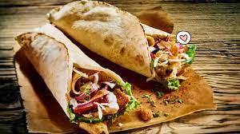

Turkey Kofta Kebabs
These turkey kofta kebabs were introduced to me about 20 years ago by my Persian neighbor. I never actually got his recipe, but I'm pretty good at replicating flavors, and these came pretty close. He made them with beef but using turkey instead makes these a lot lighter.
Ingredients
- Vegetable oil for grill
- 1 pound ground turkey
- 1 small onion, minced
- 1/4 cup chopped fresh cilantro
- 1 large egg
- 2 cloves garlic, minced
- 1/4 teaspoon choped green chile pepper
- 1/4 teaspoon ground coriander
- 1/4 teaspoon ground paprika
- 1/4 teaspoon chili powder
- salt to taste
Directions
Step 1
- Preheat the grill for medium heat and lighty oil the grate
Step 2
- Combine turkey onion, cilantro, egg, garlic, chile pepper, coriander, paprika, chili powder, and salt in a large bowl; mix throughly, Divide mixture into twelve 1/4-cup portions; roll into log-shaped ovals and place on baking sheet.
Step 3
- Grill ovals over indirect heat, turning occasionally, until no longer pink in the center, 25 t 30 minutes. An instant-read thermometer inserted into the center should read at least 165 degrees F (74degrees C).